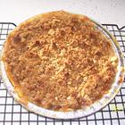
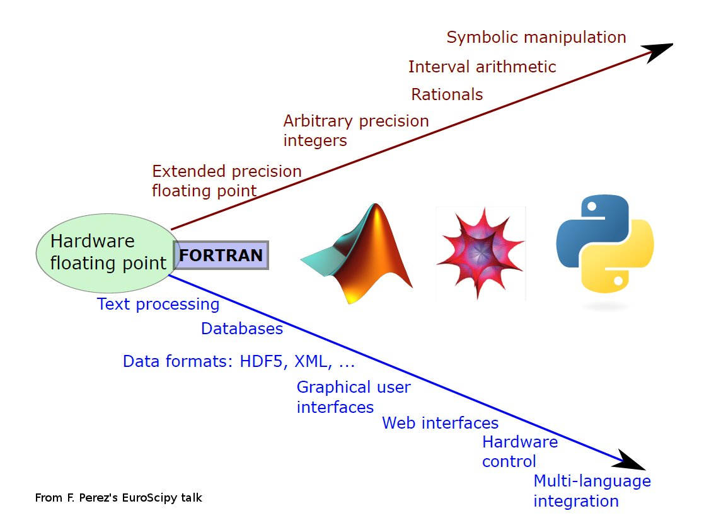

is to make you comfortable with Python.
- I would rather not try to teach you Python
- Instead, I will try to help you learn Python
- am a research scientist at KASI (CS was not my major)
- have been using Python for ~10 years
- am a member of Matplotlib developers
- created a few astronomy-related python modules
- An artificial language designed to communicate instructions to a computer.
- Programming languages can be used to create programs that control the behavior of a machine
How to make a computer to calculate a square root.
- a square root of a number $x$ is a number $y$ such that $y^2 = x$
- Declarative knowledge is not very helpful for computation
- You must provide a series of steps, like a recipe.
- You must describe the actions necessary to transform ingredients into meals.
- Memory
- Control Unit
- Arithmetic unit
- I/O
- A program is a recipe.
- Recipes are based on a set of primitives that can be combined in a sequence to accomplish something.
- Of course, you also need ingredients.
Ingredients
2 ounces butter 1/2 cup packed brown sugar 1/2 cup all-purpose flour 1 cup chopped pecans 9 apple - peeled, cored and sliced 1/4 cup white sugar 1 tablespoon all-purpose flour 1 teaspoon ground cinnamon 2 recipes unbaked pie shells
Directions
- Preheat oven to 350 degrees F (175 C).
- Prepare the topping by combining the butter, brown sugar, flour and chopped pecans. Cut in all ingredients with pastry cutter until pea-sized. Set aside
- ...
- python code
def f(a): b = a + 1 return b
- machine-readable code
2 0 LOAD_FAST 0 (a) 3 LOAD_CONST 1 (1) 6 BINARY_ADD 7 STORE_FAST 1 (b) 3 10 LOAD_FAST 1 (b) 13 RETURN_VALUE
- python code $\Rightarrow$ byte code $\Rightarrow$ assembly
- provides you the necessary primitives with available ingredients.
- coding : make a recipe using the primitives and ingredients
- Low-level vs. High-level
- General vs. Targeted
- Interpreter vs. Compiler
- Fortran, C, C++?
- IDL?
- Perl, Ruby, Tcl?
- Stsci : pyraf and other tools
- NRAO : CASA
- CXC : CIAO
- etc.

Check fperez_euroscipy_2011_page3-4.pdf
- Python is a programming language that lets you work more quickly and integrate your systems more effectively (from python.org).
- Python is a dynamic object-oriented programming language
- comes with extensive standard libraries
- strong support for integration with other languages and tools (C, Fortran, etc)
- Dynamic : Runtime vs. Compile time
- dynamic data
- dynamic code : INTERACTIVE!
- rapid development but slow runtime performance
- Object-Oriented
- A programming paradigm that uses "objects" - consisting of data fields and methods (code)
- the conventional model : a program is a list of tasks (subroutines) to perform
- OOP : a program is a collection of interacting objects
Programs written in Python are typically much shorter and more readable than equivalent C or C++ programs, for several reasons
- no variable or argument declarations are necessary.
- the high-level data types allow you to express complex operations in a single statement
- statement grouping is done by indentation instead of beginning and ending brackets
- Python is "Interactive"
- line-by line code execution
- runtime introspection
- Performance can be improved using compiled libraries specific for data analysis
- python provides a general programming framework.
- CPU intensive works can be done using a module written in low level languages (C, Fortran, C++)
- e.g.) pyraf : reuse most of the IRAF tasks (in C, Fortran) and provides a user-level interface for those tasks.
- c.f., IDL (Interactive Data Language)
"We will encourage you to develop the three great virtues of a programmer: laziness, impatience, and hubris." -- LarryWall, ProgrammingPerl (1st edition), OreillyAndAssociates
- The quality that makes you go to great effort to reduce overall energy expenditure. It makes you write labor-saving programs that other people will find useful, and document what you wrote so you don't have to answer so many questions about it. Hence, the first great virtue of a programmer.
- The anger you feel when the computer is being lazy. This makes you write programs that don't just react to your needs, but actually anticipate them. Or at least pretend to. Hence, the second great virtue of a programmer.
- Excessive pride, the sort of thing Zeus zaps you for. Also the quality that makes you write (and maintain) programs that other people won't want to say bad things about.
- Numbers (integers, floats, complex numbers), String, Boolean
- operators : +, -, *, /
- Expressions
- combination of operands and operators, etc.
- something that can be evaluated as a value
a classification identifying one of various types of data, such as floating-point, integer, or Boolean, that determines
- the meaning of the data
- the possible values for that type
- the operations that can be done on values of that type
- the way values of that type can be stored
Formally, a type can be defined as "any property of a programme we can determine without executing the program".
- Numbers
- integers
- floats
- complex numbers
- String
- Boolean : True, False
- arithmetic operators : +, -, *, /, %, **, // (floor division)
- boolean operators : and, or, not
- binary bitwise operators : &, |, ^ (exclusive or)
- 3 and 4
- 3 & 4
- comparisons : <, >, ==, >=, <=, <>, !=
- shifting : <<, >>
when in doubt, use parentheses.
- integer
- 1, 2, 3
- int("3"), int(3.5)
- float
- 3.4, 2.1e4
- float("3.4"), float(3)
- string
- "abc", 'abc'
- str(3)
- bool
- True, False
- bool("a"), bool(3)
- comparison between different types are allowed
- "3" < 3 : True or False ?
- Python only provide weak type checking
- make sure you are using a correct type
- use type conversion if necessary
- Assignment in Python is a name binding
- a = 3
- b = a
- no variable (type) declarations are necessary
- A variable can be used anywhere legal to use a value
- A variable inherits its type from the associated value
It is recommended that you do not change types associated with a name arbitrarily.
- value
- variable
- expression + expression
- expression or expression
- ...
| Table of Contents | t |
|---|---|
| Exposé | ESC |
| Full screen slides | e |
| Presenter View | p |
| Source Files | s |
| Slide Numbers | n |
| Toggle screen blanking | b |
| Show/hide slide context | c |
| Notes | 2 |
| Help | h |